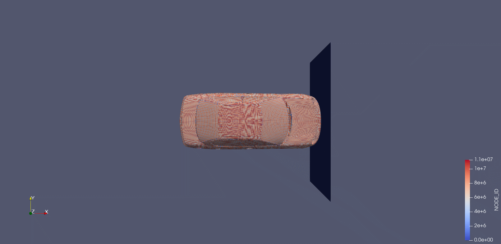

Windows 下 OpenRadioss 的使用
测试实例
处理步骤
-
模型初始化
starter_win64_sp.exe -i NEON1M11_0000.rad -nt 8 -
引擎求解
输出文件：NEON1M11A00{1-17}。engine_win64_sp.exe -i NEON1M11_0001.rad -nt 8 -
将输出转化为可视化模型文件
anim_to_vtk_win64.exe NEON1M11A017 > view.vtk -
使用 paraview 可视化模型文件
并点击左下角paraview view.vtkProperties中的Apply。
运行结果
